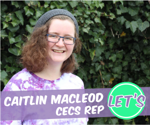

In August 2015 I joined a ticket named Let's ANUSA with a bunch of really impressive people to contest the elections for the ANU Students’ Association. I was running for the position of College Representative for the College of Engineering and Computer Science (CECS) with the below policies. After an intense campaign throughout August, it was announced that I was elected as one of the two CECS Reps on the 28th of August.
My term starts on the 31st of December 2015 for a year from that date. Below I've listed my policies and personal profile from the campaign for prosperity, and because student election ticket websites aren't the most reliable. The Facebook Page should be pretty long-lasting, and a lot of content is on there.
Please note that the profile image used below is mirrored - that's not exactly what my face looks like. The photo was taken by Tooba, and graphic design done by Maja.
Hi! I’m Caitlin Macleod and I’m a townie studying a Bachelor of Advanced Computing. I’m currently the President of the ANU Computer Science Students’ Association, which offers social and educational events, a great common room space (open to all!) and advocacy to people who are studying or interested in computer science.
I’m running for the position of CECS Rep, a vitally important role within my college and ANUSA. CECS Reps work with students and the school to improve the experience of students within the college, and to provide important input into college processes that are usually not open or advertised to students. It’s a role that has huge potential to start important movements with ongoing support from the school, as seen by the CECS Women Mentoring program that started this year.
In my year of serving as CSSA President I’ve seen some aspects of the complex system that guides the changes that affects students in my college, and have been dissatisfied with what I’ve seen. There has been little public student consultation on important changes, and rumours have abounded about a series of important changes with little to no official information being released to students.
I’ve also seen the positive effects of the 2015 ANUSA CECS Reps with their active consultation and advocacy processes, as well as the establishment and continuation of longer term initiatives like CECS Mentoring. I also want to be in a position where I can serve as a referral service for other students interested in leadership, and believe that serving as the CECS Rep is a good way to achieve this.
I stand for more student consultation and representation on important issues within the college. There are significant changes coming up for this college, with a curriculum review happening within computer science, two new buildings entering a critical stage of planning, and action on gender equality across the college coming to the surface with the Leadership Council for Gender Equality @ CECS.
Let’s and ensure that student consultation is the first item on the agenda for decisions that affect students and not repeat past errors in this college and others. Let’s hold regular consultation hours and start a wattle page for all students enrolled in courses in CECS and post regular updates and requests for feedback in there. Let’s ensure the equal representation of students across the college by electing our ANUSA CECS Reps from both Computer Science and Engineering.
Let’s improve advocacy and consultation processes in CECS and represent all students in the college fairly!
I'm Caitlin the sole candidate for CECS Representative for Let's ANUSA in 2016.
Throughout my time in the College of Engineering and Computer Science I’ve noticed three recurring issues that I’m passionate about addressing. These are: a closed-off and divided community throughout CECS, inadequate student consultation in college-driven changes that affect students, and a harmful culture around student wellbeing and diversity. Together we can work with students and the college to implement actions to address all of these.
First off: CECS has a divided community, which is actively harming our students and their chances at making the right connections for their future. There are clear divides between Computer Science and Engineering, between domestic students and international students, and between students enrolled in individual CECS course and CECS degrees. This prevents students from benefiting from the knowledge and expertise of other students, especially when undertaking research or group projects. CECS is aiming to become more interdisciplinary, but we need the students on-board to achieve that.
Here’s how I plan to address this:
Throughout my term in the CSSA, I was also frustrated by inadequate student consultation in college processes that affect students. There are many changes coming up in the next year within CECS, with a curriculum review process for computer science degrees getting underway and two new buildings for the college going through planning stages. With so many horror stories emerging across the university over the past few years, of changes to departments and degree reviews not consulting the students that they affect, we need to reinforce the college’s understanding that students deserve to be a part of these decisions, and keep them accountable.
Finally, I’ve also been involved in advocacy to the college, and while there has been a lot of positive action for improving student wellbeing and diversity, there are many measures that we can implement to improve these problems.
There’s a huge diversity of previous experience and knowledge within our college, and this currently combines with a stigma around asking for help to create an unwelcoming and unsupportive environment for people who may be struggling. This doesn’t help with the obvious diversity problems within technology, especially around gender and race. This year student wellbeing and diversity have definitely been on the agenda thanks to the college and our wonderful current CECS reps, but there’s always more to do. There have been measures put in place to tackle gender equality and move towards creating a community of ANU Tech Girls, such as the CECS mentoring program, Gender Equality@CECS Leadership Council, and the reboot of Women in Technology lunches.
I’m always happy to talk about these ideas, and interested in improving them. Constructive feedback is one of the most important things that you can contribute to anyone in this campaign. :)